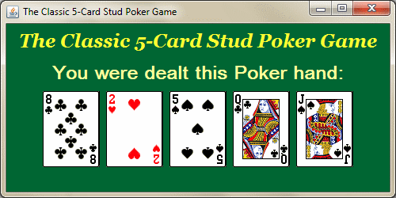
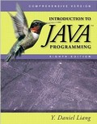

This week the focus will be on finishing and debugging Project 5. You will present your final project to the class in either class this week. Please verify your program does indeed work using test data before you present. There will be no new content for the course this week. If you would like me to review anything we can do it the first class this week.
This week we will cover the topics of Exception Handling and Graphics covered in Chapter 13 and Chapter 15. Of particular interest is exception handling of a GUI form covered in the slide set, but not in the book. We will also cover timer events covered in Section 16.12 which will enable you to do animation of a graphic. Project 4 is due class 1 this week and Project 5 will be assigned for completion the last class of Week 8.
This week we will continue with the topic of creating Graphical User Interfaces continuing with Chapter 17 and also Chapter 18. Project 4 is worth 100 points and will be due Week 7 class 1.
This week we will be covering the topic of Event Driven Programming utilizing basic Swing components covered in part of Chapters 16 and 17. Chapter 16 content will be covered in the first class this week. You need to utilize content from only Chapter 16 to do Assignment 3 and you will have only until the second class this week to complete it.
The hyperlinks to all required file downloads are shown and you should
check and print these items before coming to class each week.
Please note that I have now uploaded all slide set PDFs as 2-slides per page
for easier reading. Beginning with Chapter 11. The code is getting longer now
that we have entered the world of OOP and GUI.
Assignment 3 is worth 40 points and is due Thursday July 5. It is relatively short and can be done using content primarily from Chapter 14 and understanding of earlier chapters. You will make a GUI based program to convert between Fahrenheit and Celsius number systems. The program needs to utilize JFrame, JPanel, JLabel, JButton, JTextField Swing components. The program must be able to do both conversions F to C and C to F after the user clicks on their desired conversion.
Now that we are firmly in the OOP GUI paradigm:
Step 1 is the creation of a suitable GUI.
Step 2 is the development of the ActionListener Inner Classes or
AnonymoussListner methods to make the event model work with the GUI.
You may want to review content from CMIS141 Slide Set 4 for Temperature Conversion Formula and known test data. Keep in mind we have left the procedural world behind and you now need to consider how to create Object Oriented Program applications with GUI's. Still the formula and test data are useful.
This week we will be covering partial content from Chapter 14 covering Abstract classes and Interfaces. The content is important because it provides the foundation to develop Graphical User Interfaces.
This week you should try to convert your Assignment 2 code to be object oriented if you wrote it as procedural. It is time to think about objects and not procedures. You will have a difficult time with 80 point Project 4 if you are stuck in the procedural world.
The hyperlinks to all required file downloads are shown and you should check and print these items before coming to class each week.
This week we will be covering content from Chapter 12 - GUI Basics. The goal will be to make a simple window to display output.

The hyperlinks to all required file downloads are shown and you should check and print these items before coming to class each week. You need to come to class to hear the lectures.
This week we will be covering content from Chapter 11 - Inheritance and Polymorphism. It is very abstract so please read before coming to the first class. Reading the material before it is covered in class will make the class seem a lot easier and you can ask better questions. If you have not received the book yet then please download the PDF file from the eChapters menu to the right or by clicking this link Chapter 11: Inheritance and Polymorphism
The hyperlinks to all required file downloads are shown and you should check and print these items before coming to class each week. You need to come to class to hear the lectures.
Free online videos are available for this content at: course is available
at:
YouTube - NewBoston
This week we will be covering content from Chapter 10 Thinking in Objects. It is fairly abstract so please read before coming to the first class. Reading the material before it is covered in class will make the class seem a lot easier and you can ask better questions. If you have not received the book yet then please download the PDF file from the eChapters menu to the right or by clicking this link Chapter 10: Thinking in Objects
You need to bring a USB Drive to all classes to store computer files that you create in class and homework. If you have a notebook computer you should also bring that to class.
The hyperlinks to all required file downloads are shown and you should check and print these items before coming to class each week. You need to come to class to hear the lectures.
Free online video courses are available at:
This is a classic Face-to-Face class and we meet entirely in person.
However, it is a web enhanced class, which means I will be posting course materials and grades online and you will upload your code for grading on the projects. So if you want to access course materials this is the place to go, but if you want to learn the material then come to class and read the book. I will post most course materials as PDF files here in the announcement section, so that you can print the materials in color prior to class.
 The textbook for this course is very good so be sure to order it early so that you have it before the first week of class. We will be using the 8th edition which covers Java Standard Edition Version 6. Please download and install the Java Development Kit Version 6 on the computer that you intend to do your homework on. The book is concise, easy to read, and has lots of examples. Don't let the thickness scare you off, we will only be covering eleven chapters in this class Chapters 10 through 18 and Chapter 33 and 34.
Before the first class, I recommend that you download and print the latest updated version of the Syllabus and other Week 1 materials described above which are posted as PDF files. I highly recommend using the freeware version of PDFXChangeViewer, which allows you to make notes and save them to any PDF file.
Please review my CMIS141 course materials, especially if I was not your instructor for CMIS141. I made many PowerPoint slides to support the course with excellent code examples and you can print these slide shows using the PDF files for the course. This CMIS141 material is presumed prerequisite knowledge for this class.
Robert Laurie